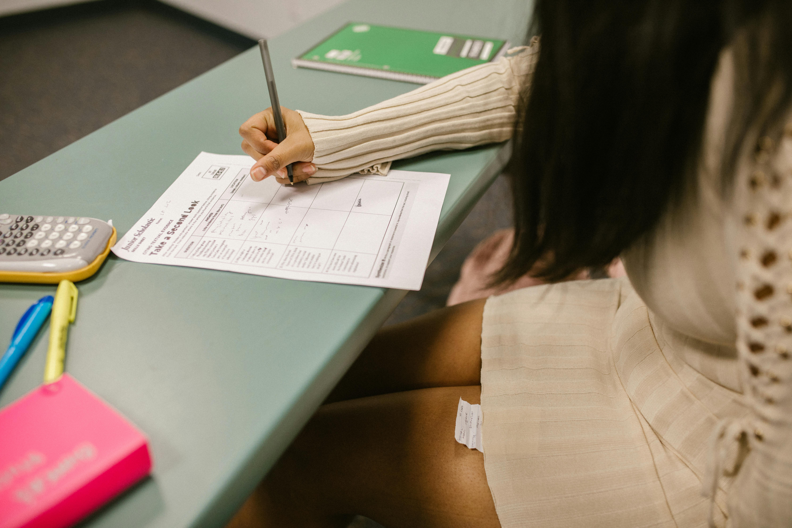

Mujer Emprendedora y Productiva
El programa Mujer Emprendedora y Productiva es una iniciativa de la Alcaldía de Bogotá, liderada por la Secretaría Distrital de Desarrollo Económico en alianza con la Organización de Estados Iberoamericanos (OEI). Su objetivo es cerrar las brechas económicas y sociales que afectan a las mujeres, especialmente aquellas en situación de vulnerabilidad, mediante el fortalecimiento de sus emprendimientos y la promoción de su autonomía económica.
Objetivo del Programa
El programa busca:
- Impulsar el crecimiento y reactivación de micro negocios liderados por mujeres en Bogotá.
- Brindar asistencia técnica y formación financiera para mejorar la gestión empresarial.
- Facilitar el acceso a capital semilla para fortalecer las unidades productivas.
- Promover encadenamientos productivos y comerciales que amplíen las oportunidades de mercado.
Beneficiarias
El programa está dirigido a:
- Mujeres con negocios en etapa temprana, microempresas o negocios tradicionales.
- Unidades productivas conformadas por un mínimo de tres mujeres residentes en Bogotá.
- Emprendimientos que puedan evidenciar su existencia mediante fotos, páginas web, redes sociales u otros medios
Beneficios
Las unidades productivas seleccionadas recibirán:
- Asistencia técnica personalizada.
- Formación financiera adaptada al perfil del negocio.
- Capital semilla de hasta $3.000.000 para el fortalecimiento del emprendimiento.
- Promoción de encadenamientos productivos y comerciales para ampliar su alcance en el mercado.
En total, se invertirán más de $30.000 millones en el programa, beneficiando a aproximadamente 3.300 unidades productivas y, a través de ellas, a 9.900 mujeres.
Fechas de Convocatoria
- Inicio de inscripciones: 7 de mayo de 2022.
- Cierre de inscripciones: 15 de julio de 2022
Es importante destacar que esta convocatoria ya ha finalizado. Sin embargo, se recomienda estar atentas a futuras oportunidades similares que pueda ofrecer la Alcaldía de Bogotá.
Requisitos para Postularse
Las interesadas debían cumplir con los siguientes requisitos:
- Conformar una unidad productiva con mínimo tres mujeres residentes en Bogotá.
- Evidenciar la existencia del emprendimiento mediante fotos, página web, redes sociales u otros medios.
- Cada una de las tres mujeres debía inscribirse en el formulario habilitado para tal fin.
- Contar con una cuenta de ahorros activa para el desembolso de los recursos.